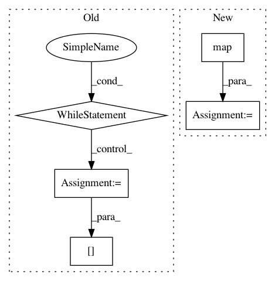

16474aee0c575e615c78d32f2a170c3d7f8f0082,autokeras/graph.py,Graph,produce_model,#Graph#,75
Before Change
id_to_tensor = {input_id: input_tensor}
q = Queue()
q.put(input_id)
while not q.empty():
u = q.get()
for v, edge_id in self.adj_list[u]:
layer = self.edge_list[edge_id]
if edge_id in self.old_edge_ids:
copied_layer = copy_layer(layer, get_int_tuple(id_to_tensor[u].shape))
temp_tensor = copied_layer(id_to_tensor[u])
else:
temp_tensor = layer(id_to_tensor[u])
id_to_tensor[v] = temp_tensor
q.put(v)
return Model(input_tensor, id_to_tensor[output_id])
def to_conv_wider_model(self, pre_layer, n_add):
output_id = self.node_to_id[pre_layer.output]
After Change
layer = self.edge_list[edge_id]
if isinstance(layer, WeightedAdd):
edge_input_tensor = list(map(lambda x: id_to_tensor[x], self.edge_id_to_input_ids[edge_id]))
else:
edge_input_tensor = id_to_tensor[u]
if edge_id in self.old_edge_ids:
In pattern: SUPERPATTERN
Frequency: 4
Non-data size: 5
Instances
Project Name: keras-team/autokeras
Commit Name: 16474aee0c575e615c78d32f2a170c3d7f8f0082
Time: 2017-12-30
Author: jhfjhfj1@gmail.com
File Name: autokeras/graph.py
Class Name: Graph
Method Name: produce_model
Project Name: dataiku/dataiku-contrib
Commit Name: 42910c039a97258e27f01949a35ecde2faf46ef5
Time: 2018-11-15
Author: redaffane@gmail.com
File Name: sentence-embedding/custom-recipes/sentence-embedding-similarity/recipe.py
Class Name:
Method Name:
Project Name: dataiku/dataiku-contrib
Commit Name: 2de92392c7c725299874ad25c53d9349a2536042
Time: 2018-11-13
Author: redaffane@gmail.com
File Name: sentence-embedding/custom-recipes/sentence-embedding-similarity/recipe.py
Class Name:
Method Name: